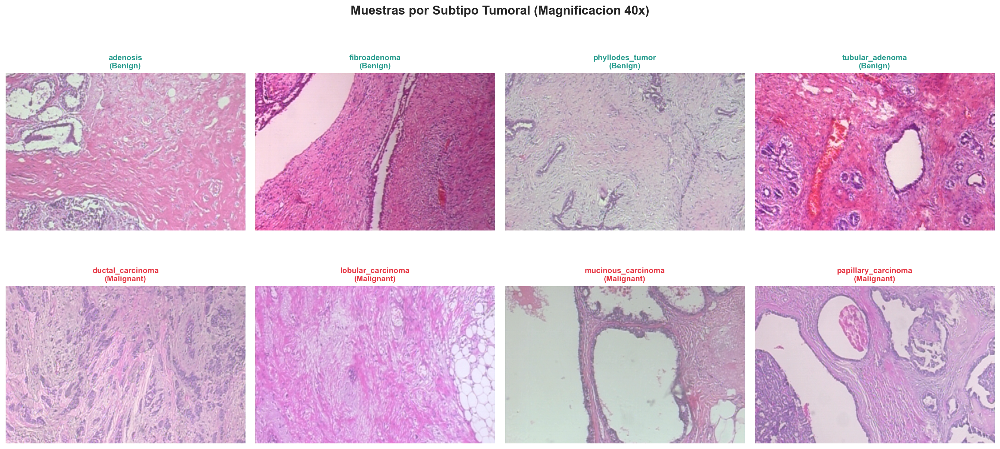
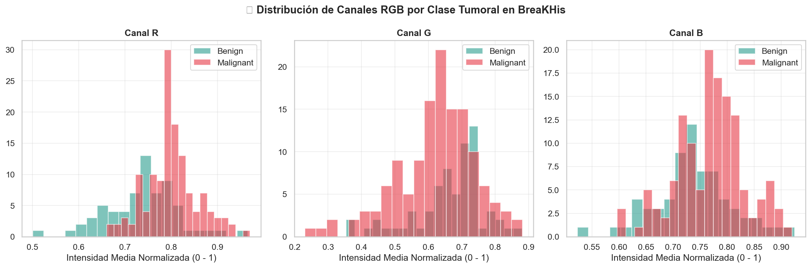

BreaKHis v1: 81 Pacientes, 4 Magnificaciones y la Hipótesis de Capas Intermedias
Explicación "con peras y manzanas" del primer dataset local (3.99 GB), corrección crítica del data leakage (14-13412), e hilo conductor desde la Reunión del 25 de Septiembre hasta Gated Attention MIL (09 Nov).
(2,480 Benigno / 5,429 Maligno)
(14-13412 aporta DC + LC)
8 subtipos clínicos reales
Listo hoy con 0 descarga extra
¿Qué es BreaKHis y por qué las 4 magnifications causan trampa?
Imagina evaluar si un árbol está sano tomándole 25 fotos con zoom 40x (copa completa), 100x (ramas), 200x (hojas) y 400x (poros). Todos los retratos de ese árbol forman una única "bolsa" (el paciente).
• Error fatal en muchos papers (Image-Split): Poner 20 fotos del árbol #14 en Estudio (Train) y 5 fotos del mismo árbol #14 en Examen (Test). La red aprende la corteza y el color del paciente, no el cáncer (inflando falsa precisión a 92–96%).
• Protocolo real (Patient-Split): Todas las ~97.6 imágenes del paciente van juntas a Train o Test.
Cada imagen BreaKHis mide 700 × 460 px (solo 322 mil píxeles, no 10 Gigapíxeles como WSI). ¡Cabe entera en un solo pase por una CNN truncada (l < L)! Así podemos extraer su mapa intermedio espacial de una vez y partir ese tensor en K sub-regiones para MIL sin recortar 1,000 parches en píxeles como Sudharshan (2019).
- • Fibroadenoma (F): 1,014 (¡30% de errores en Spanhol!)
- • Adenoma Tubular (TA): 569
- • Tumor Filodes (PT): 453
- • Adenosis (A): 444
- • Carcinoma Ductal (DC): 3,451 (43.6% del dataset!)
- • Carcinoma Mucinoso (MC): 792
- • Carcinoma Lobular (LC): 626
- • Carcinoma Papilar (PC): 560
Pipeline Celda a Celda de 01_BreaKHis_EDA.ipynb y el Bug de '14'
notebooks/01_BreaKHis_EDA.ipynb (17 celdas)breast/benign|malignant/SOB/<subtipo>/<carpeta>/<mag>X/ y valida peso exacto en disco (3.99 GB extraído vs 4.27 GB .tar.gz).SOB_B_A-14-22549AB-100-001.png. Se arregló tokens[1] → f"{{tokens[1]}}-{{tokens[2]}}" exportando las 7,909 filas a breakhis_metadata.xlsx.breakhis_pivot_subtipo_magnificacion.xlsx y 4 paneles en breakhis_distribucion_clases.png.breakhis_stats_pixeles.xlsx ([0.780, 0.635, 0.759]).Bags_Pacientes (81) y Bags_Carpetas_82 (82) dentro de breakhis_bags_pacientes.xlsx.
En la diapositiva 12 del Seminario del 25 de Septiembre (y en Spanhol 2016 / Sudharshan 2019), la literatura suele hablar de "82 pacientes". Nuestra auditoría empírica demuestra por qué: el paciente 14-13412 tiene 246 imágenes repartidas en 2 carpetas clínicas (Carcinoma Ductal + Carcinoma Lobular). Si agrupamos por carpeta en vez de por paciente real, ¡se filtra al mismo paciente!
Desbalance Clínico: Clases, 8 Subtipos y 4 Magnificaciones

| Zoom | Benigno | Maligno | Total |
|---|---|---|---|
| 40x | 625 | 1,370 | 1,995 |
| 100x | 644 | 1,437 | 2,081 |
| 200x | 623 | 1,390 | 2,013 |
| 400x | 588 | 1,232 | 1,820 |
Si un modelo tonto predice siempre "Maligno", logra 68.6% Accuracy sin ver un píxel. Por eso en la tesis reportaremos ROC-AUC, Balanced Accuracy, Macro-F1 e intervalos bootstrap 95% (exactamente como definiste el 25 de septiembre).
Los 8 Subtipos Reales y Variabilidad de Tinción H&E


mean_G = 0.319 por alta densidad de núcleos teñidos con hematoxilina.(460, 700, 3): 0 imágenes corruptas.Dos Formas de Armar la Bolsa en BreaKHis (+ nuestra Hipótesis)
Paciente = Bolsa (~97 imgs)
Cada uno de los 81 pacientes es una bolsa X. Sus ~24–246 imágenes (o parches PFTAS de 64×64 px) son las instancias.
Bag 14-13412 → 246 imgs (Maligno)
Imagen = Bolsa (Parches 64×64)
Cada foto PNG de 700×460 px es la bolsa, dividida en ~100 parches en grilla (test) o 1,000 aleatorios (train). Requiere 1 pase de CNN por cada parche.
7,909 imgs = ~790,900 pases!
Mapa Intermedio = Bolsa (1 Pase!)
Entra la imagen completa (700×460) UNA SOLA VEZ a una CNN congelada (ej. ResNet50 res3b_branch2c, 33% de profundidad según Zambrano 2022). Cada celda espacial (H'×W') del tensor es una instancia!
Tensor [H', W', C] → K=H'×W' instancias
→ Gated Attention (Ilse 2018)
Simulador: ¿Cómo el Parser de Paciente y la Extracción Afectan la Evaluación?
Simulador A: Fuga por Paciente (14-13412)
Simulador B: Costo y Textura según Estrategia
¿Cómo BreaKHis Conecta Todas las Reuniones Anteriores?
Se propuso usar BreaKHis como banco principal para responder: "¿Pueden sub-regiones de mapas intermedios (ResNet-18/50, EfficientNet-B0 congelados) sustituir a los parches en píxeles?". Se reportó inicialmente 82 pacientes; en Noviembre descubrimos y demostramos por qué son 81 IDs en 82 carpetas.
Explicó la heterogeneidad intra-paciente: incluso un paciente maligno en BreaKHis tiene regiones de tejido transicional benigno. Por eso heredar ciegamente la etiqueta global a cada parche introduce ruido, haciendo superior al paradigma MIL de bolsa frente al voto de instancia única.
Sustituye el Non-parametric MIL y MI-SVM de Sudharshan (2019) por la compuerta diferencial \(\tanh(Vh_k^\top) \odot \sigma(Uh_k^\top)\), operando en el espacio de embeddings sin perder interpretabilidad para distinguir Fibroadenoma de Carcinoma Ductal.
Con 3.99 GB en disco, breakhis_bags_pacientes.xlsx exportado y GroupKFold sobre 81 pacientes, BreaKHis queda listo para entrenar esta semana el primer baseline comparando: PFTAS/Parches vs Capas Intermedias (33%) con Gated Attention.
Benchmark Bibliográfico Exacto del Repositorio Referencias/
Paper (en Referencias/) |
Nivel / Estrategia MIL | Métricas Reportadas Verificadas | Lección / Brecha para Nuestra Tesis |
|---|---|---|---|
| Spanhol et al. (2016) IEEE TBME (Dataset BreaKHis) |
Descriptores manuales (PFTAS 162-d, CLBP, GLCM, LBP, ORB) + SVM/RF/QDA; split paciente 70/30. | Patient Rec.: 80%–85.1% (SVM+PFTAS @ 200x; AUC 0.861). Oracle teórico 99%. | ~30% de errores vienen de Fibroadenoma confundido con maligno. Deja amplio margen de mejora sobre 85%. |
| Sudharshan et al. (2019) Expert Syst. Appl. (12 MILs) |
1,000 parches train / ~100 test (64×64, PFTAS 162-d): APR, DD, EM-DD, Citation-kNN, mi/MI-SVM, Non-param, MILCNN. |
Patient-bag @40x: 92.1%±5.9% (Non-param), 86.9% MILCNN. Image-bag: 80.8%–87.8%. | MI-SVM > mi-SVM (p=0.0029), probando que bolsa > instancia; pero usó descriptores fijos PFTAS o parches sueltos sin atención moderna. |
| Zambrano et al. (2022) IEEE Access (Prof. Guía) |
Capas tempranas CNN sin reentrenamiento (DenseNet201 conv3_block8 14%, ResNet50 res3b 33%) + filtrado de máscara espacial. |
Tiempo extracción −59.33% (DenseNet201) y 99.56% Acc en CASIA Lamp sin fine-tuning. | Fundamenta directamente nuestro pase único truncado en BreaKHis: textura repetitiva celular sin sesgo de clases macroscópicas ImageNet. |
| Puente con CLAM (Lu 2021) & Ilse (2018) | ResNet50 truncada al 3er bloque residual (1024-d, ¡intermedia!) + Gated Attention MIL. | Reemplaza umbral PFTAS y max-pooling ingenuo por agregación ponderada diferenciable \(\alpha_k\). | Unifica ambas corrientes: capas intermedias (Zambrano) + Atención con Compuertas (Ilse) sobre 81 pacientes limpios. |
¿Qué Hacemos Mañana con BreaKHis? (Sin Descargas Adicionales)
- Partición Estricta:
StratifiedGroupKFold(n_splits=5)usando la columna auditadapaciente(81 IDs reales, nunca carpeta ni imagen). - Baseline SOTA Reproducible: Parches espaciales + Gated Attention MIL (Ilse 2018) y comparación contra Mean/Max Pooling (08 Oct).
- Experimento Propio Central (25 Sep): Barrido de capas intermedias (ResNet-18/50 bloque 2 vs 3 vs 4, DenseNet bloque 3) sobre imagen completa 700×460 en pase único + proyección/selección de canales λ.
- Ablación Clínica: Analizar sensibilidad por aumento (40x vs 200x) y tasa de falsos positivos en Fibroadenoma.